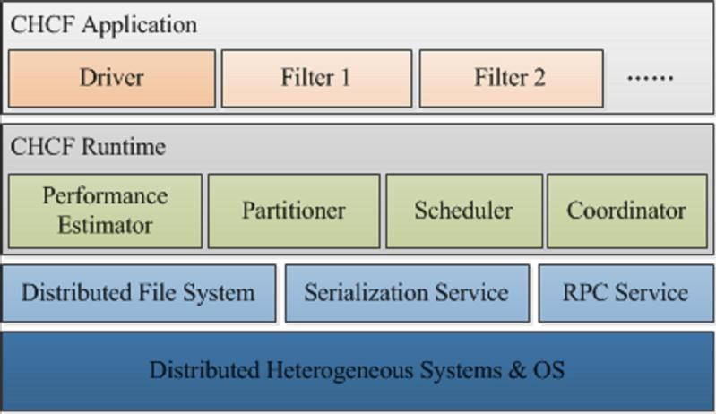
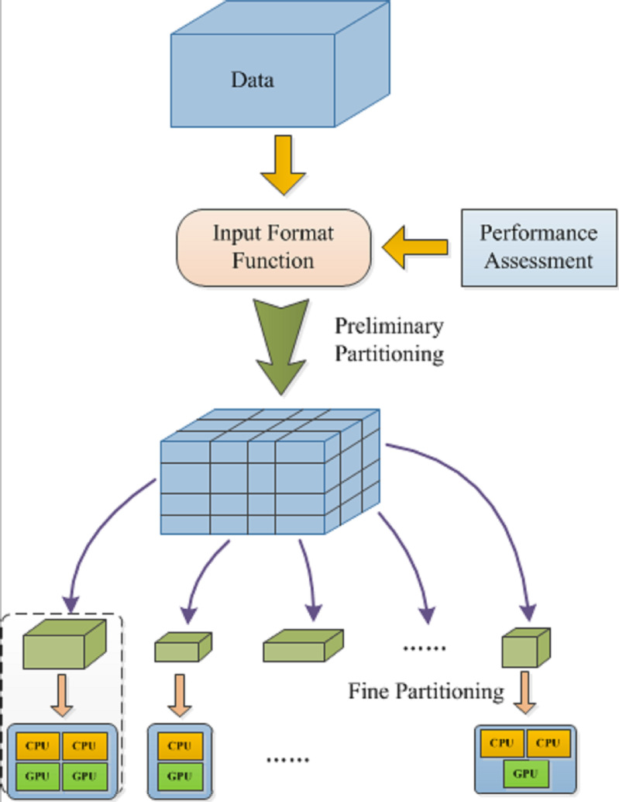
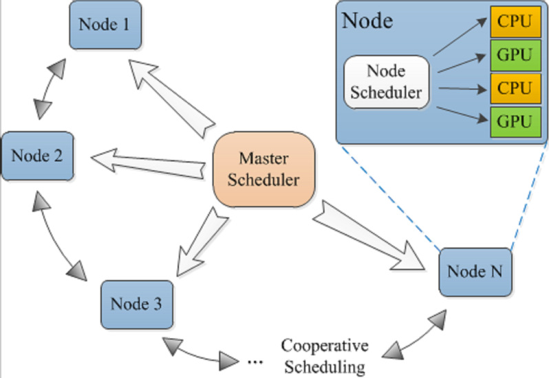
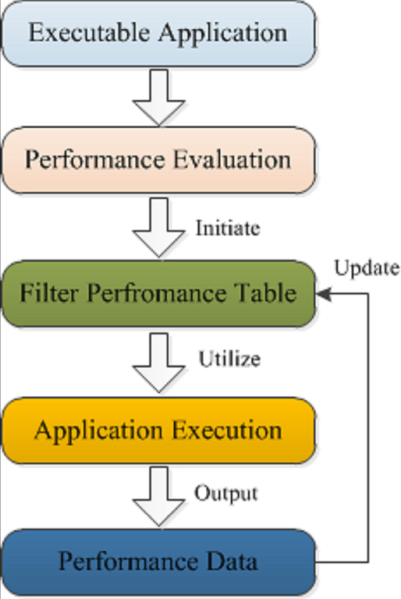

CHCF: A Cloud-based Heterogeneous Computing Framework for Large-Scale Image Retrieval
Hanli Wang1 , Bo Xiao1 , Lei Wang1 , Fengkuangtian Zhu1 , Yu-Gang Jiang2 , Jun Wu1
1 Department of Computer Science and Technology, Tongji University, Shanghai, P. R. China
2 School of Computer Science, Fudan University, Shanghai, P. R. China
hanliwang at tongji.edu.cn; 1314xiaobo at tongji.edu.cn; 110_wangleixx at tongji.edu.cn; 2zhufengkuangtian at tongji.edu.cn; ygj at fudan.edu.cn; wujun at tongji.edu.cn
Overview:
The last decade has witnessed a dramatic growth of multimedia content and applications, which in turn requires an increasing demand of computational resources. Large-scale image retrieval is one of the major applications, which attracts more attentions from research and industry, such as Google Image Search, Baidu Image Search and Bing Image Search. To meet the tremendous computational demand of large-scale image retrieval, commodity clusters equipped with GPUs (referred to as hybrid cluster) can be employed to scale out workloads horizontally across multi-GPUs. However, the development of domain-specific applications running on hybrid clusters is never easy [1]. Meanwhile, the hybrid cluster confronts the problem of low utility of computational resources because of load imbalance. Facing the above challenges, a cloud-based heterogeneous computing framework (CHCF) is proposed herein, which is designed to reduce the barriers of developing multimedia mining applications running on the hybrid cluster as well as maximizing the utility of the overall system performance.
CHCF contains a utility library including a set of multimedia mining algorithms, such as feature extraction, K-Means clustering, and BoF (or BoW) generation [2], which aims to help users develop their own applications rapidly by reusing the modules. In order to avoid the mismatch between the sub-workloads and computational resources before the scheduling of the computation, an adaptive partitioner for input data split is designed. The partitioner works conjunctly with input format function to guarantee the best sub-workloads when the computation begins. CHCF employs a knowledge-based hierarchical distributed scheduler and performance estimator to solve load imbalance during the execution of the computation. In combination with the static scheduling information during the application compilation, the proposed scheduler updates the knowledge of the framework that is provided by the performance estimator to make the scheduler more intelligent and adaptive to the specific hardware conditions and diverse computation loads.
Implementation Details:
The overall architecture of the proposed CHCF is depicted in Fig. 1. A multimedia mining application, referred to as CHCF application, consists of one driver module and multiple filters. The driver module, which is the skeleton of the application, defines the flow chart of the application. And the filters, which implement the algorithms such as feature extraction and BoF generation, can be built by reusing, aggregating or extending the built-in filters in the utility library, or developing from scratch. The CHCF runtime, by which CHCF applications are executed, employs the adaptive partitioner, the knowledge-based hierarchical scheduler and the performance estimator to guarantee the overall performance of the hybrid cluster.

Fig. 1 Architecture of CHCF
The adaptive partitioner is designed to create data splits for parallel sub-tasks across the hybrid cluster, which takes the following factors into consideration to balance the computation loads among the cluster, including the heterogeneity of the system, the information from the performance estimator, the available computational resources of the system, and the attributes of the input data. The illustration of the adaptive data partitioning is given in Fig. 2.

Fig. 2. Illustration of adaptive data partitioning
Although the adaptive partitioner could potentially determine the best size of input data split for each filter instance when the task begins, the available computational resource and performance may vary during runtime execution. In order to reduce load imbalance while the application is running, a dynamic knowledge-based hierarchical scheduling strategy is employed [3]. This scheduler is master-less, which consists of a master scheduler and several node schedulers. The node schedulers keep monitoring the resources and communicate with each other. The proposed scheduling approach is illustrated in Fig. 3.

Fig. 3. Illustration of the proposed scheduler
Since the adaptive partitioner and dynamic scheduler both make decisions based on the information about each filter's performance, it is crucial to make the information accurate enough. The performance estimator keeps tracking the execution of each filter and updating the related information. The process about performance estimation is shown in Fig. 4.

Fig. 4. Illustration of the performance estimation process
Download:
CHCF-1.0:原站插图：图片暂留白CHCF-1.0.tar.gz
User Guide of CHCF-1.0:原站插图：图片暂留白User-Guide-of-CHCF-1.0.pdf
Citation:
Please cite the following paper when using CHCF:
Hanli Wang, Bo Xiao, Lei Wang, Fengkuangtian Zhu, Yu-Gang Jiang, and Jun Wu
CHCF: A Cloud-based Heterogeneous Computing Framework for Large-Scale Image Retrieval
IEEE Transactions on Circuits and Systems for Video Technology, vol. 25, no. 12, pp. 1900-1913, Dec. 2015.
References:
[1] NVIDIA Corporation, NVIDIA Developer Zone, https://developer.nvidia.com/cuda-zone
[2] J. Sivic and A. Zisserman, “Video Google: A Text Retrieval Approach to Object Matching in Videos,” in Proc. ICCV’03, Oct. 2003, pp. 1470-1477.
[3] O. Beaumont, A. Legrand, L. Marchal, and Y. Robert, “Assessing the Impact and Limits of Steady-State Scheduling for Mixed Task and Data Parallelism on Heterogeneous Platforms,” in Proc. ISPDC’04, Jul. 2004, pp. 296-302.